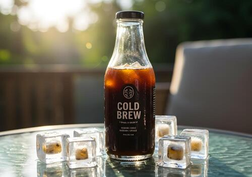

Cold Brew Coffee is a smooth, less acidic coffee beverage made by steeping coarsely ground coffee beans in room temperature water for an extended period, typically between 12 to 24 hours.
Ingredients: